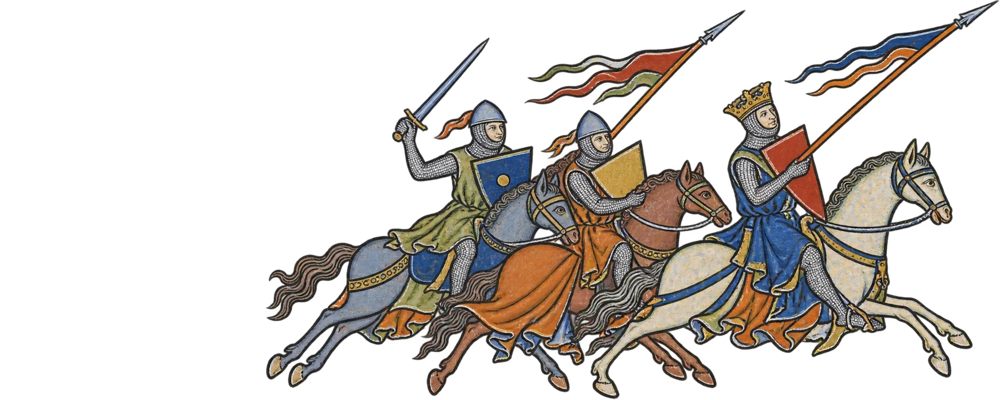
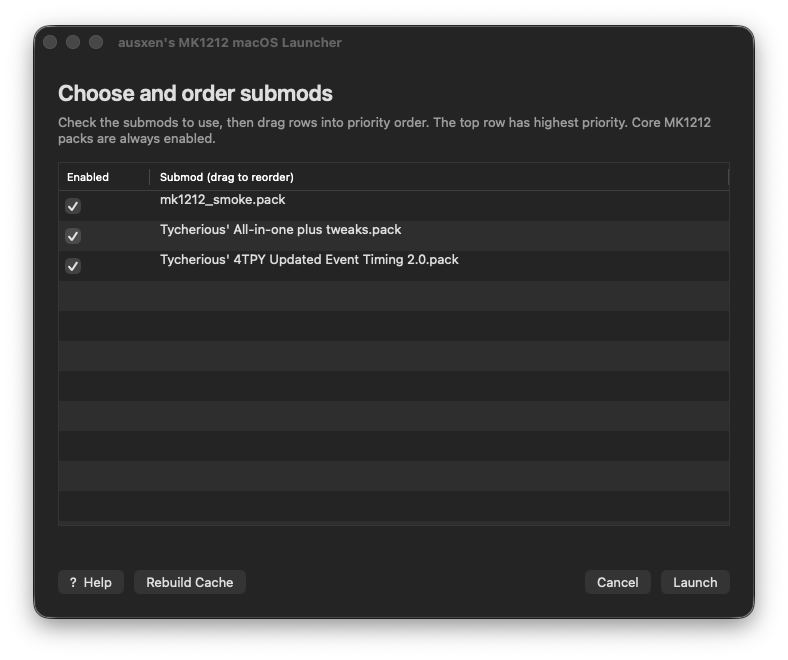
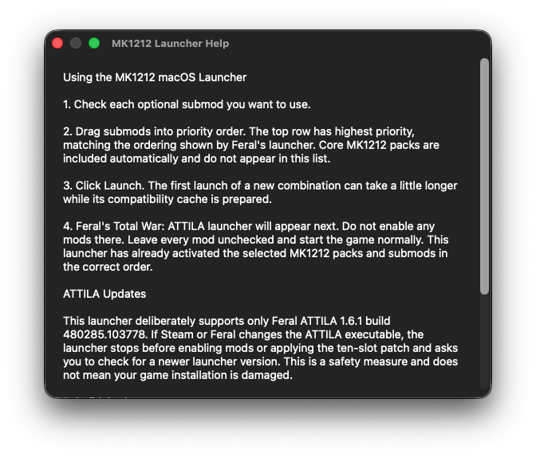
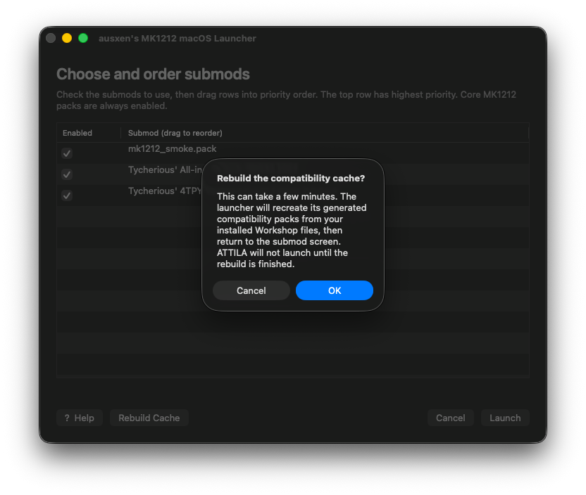

MK1212 on macOS
MK1212 Mac Launcher

You want to play MK1212 on your Mac. So did I. And you'd probably rather be gaming than reading a GitHub page. Fair.
No Windows. No Boot Camp. No emulator.
macOS 12+ · Apple Silicon · Feral Total War: ATTILA 1.6.1

Install
- Download the launcher. Want to verify the SHA-256 checksum first? Go for it. Otherwise, carry on.
- Open the DMG and run the installer. If macOS blocks it, use Privacy & Security → Open Anyway.
- Add
MK1212 Mac Launcher.appto Steam as a Non-Steam Game. You'll find it in/Applications/MK1212 Mac Launcher/. - Run the launcher from Steam. The first launch does most of the annoying setup for you.
- Pick your submods, drag them into the order you want, and hit Launch.
- When the normal Feral launcher appears, leave its Mods section alone and start the game. MK1212 Mac Launcher has already handled the mods for you.
That's it. Go play. Try not to get excommunicated.
What It Looks Like


Supported Setup
Mac
Apple Silicon / ARM64
macOS
12 or newer
ATTILA
Feral 1.6.1 build 480285.103778
If Steam or Feral updates ATTILA itself, the launcher may temporarily refuse to run until that build has been checked. Workshop updates use the normal cache rebuild flow instead.
You can also DM me on Discord at @austenballard.